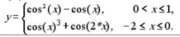
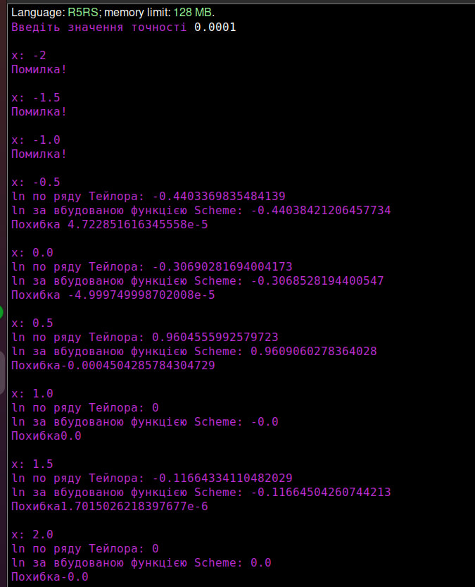
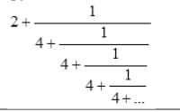
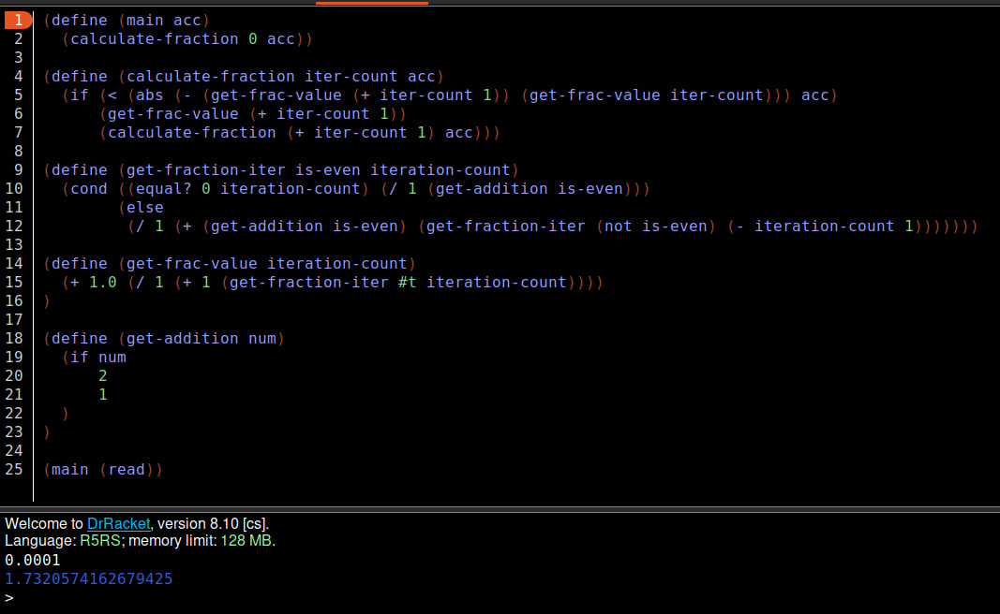

Лабораторна робота 2
Мета роботи
Опанувати теоретичні основи застосування рекурентних співвідношень для обчислення тригонометричних, експоненціальних, степеневих функцій та розробити програми функціональними мовам програмування для обчислення їх значень
Вибір мови програмування та IDE
Для виконання даної лабораторної роботи було використано мову функціонального програмування Scheme та IDE DrRacket. Мова Scheme надає великий набір числових типів і операцій з ними, має неявні типи даних та статичну область видимості. DrRacket дозволяє програмувати на великій кількості мов функціонального програмування та має зручний інтерфейс.
Завдання 1
Умова завдання
Обчислити значення функції у, розвинувши функцію ln(x) у ряд Тейлора. Аргумент х змінюється від -2 до 2 з кроком 0.5. Визначити похибку
Код програми:
(define (tailor-series x acc sum i)
(define t (/ (* (expt -1 (- i 1)) (expt (- x 1) i)) i))
(if (< (abs t) acc)
sum
(tailor-series x acc (+ sum t) (+ i 1))))
(define (y x acc)
(cond
((and (>= x -2) (<= x -1))
(begin (display "x: ")
(display x)
(newline)
(display "Помилка!")
(newline)
(newline)
(y (+ x 0.5) acc)))
((and (> x -1) (<= x 0))
(begin (display "x: ")
(display x)
(newline)
(display "ln по ряду Тейлора: ")
(display (- (tailor-series (+ 2 (/ x 2)) acc 0 1) 1))
(newline)
(display "ln за вбудованою функцією Scheme: ")
(display (- (log (+ 2 (/ x 2))) 1))
(newline)
(display "Похибка ")
(display (- (- (tailor-series (+ 2 (/ x 2)) acc 0 1) 1) (- (log (+ 2 (/ x 2))) 1)))
(newline)
(newline)
(y (+ x 0.5) acc)))
((and (> x 0) (<= x 2))
(begin (display "x: ")
(display x)
(newline)
(display "ln по ряду Тейлора: ")
(display (* (tailor-series (/ x 2) acc 0 1) (tailor-series x acc 0 1)))
(newline)
(display "ln за вбудованою функцією Scheme: ")
(display (* (log (/ x 2)) (log x)))
(newline)
(display "Похибка")
(display (- (* (tailor-series (/ x 2) acc 0 1) (tailor-series x acc 0 1)) (* (log (/ x 2)) (log x))))
(newline)
(newline)
(y (+ x 0.5) acc)))
(else
(newline)
)
)
)
(display "Введіть значення точності ")
(define accuracy (read))
(newline)
(y -2 accuracy)
Результат роботи програми
Достовірність результату:
Завдання 2
Умова завдання
Обчислити нескінчений ланцюговий дріб, задавши значення точності при виклику функції
Код програми:
(define (main acc)
(calculate-fraction 0 acc))
(define (calculate-fraction iter-count acc)
(if (< (abs (- (get-frac-value (+ iter-count 1)) (get-frac-value iter-count))) acc)
(get-frac-value (+ iter-count 1))
(calculate-fraction (+ iter-count 1) acc)))
(define (get-fraction-iter is-even iteration-count)
(cond ((equal? 0 iteration-count) (/ 1 (get-addition is-even)))
(else
(/ 1 (+ (get-addition is-even) (get-fraction-iter (not is-even) (- iteration-count 1)))))))
(define (get-frac-value iteration-count)
(+ 1.0 (/ 1 (+ 1 (get-fraction-iter #t iteration-count))))
)
(define (get-addition num)
(if num
2
1
)
)
(main (read))
Результат роботи програми
Достовірність результату:
Висновок
В ході виконання даної лабораторної роботи було проведено роботу з розвиненням функції у ряд Тейлора при різних значеннях аргумента x, також було обчислено нескінченний ланцюговий дріб до заданої точності. В результаті всі написані функції виконувалися без помилок та видавали правильний результат.